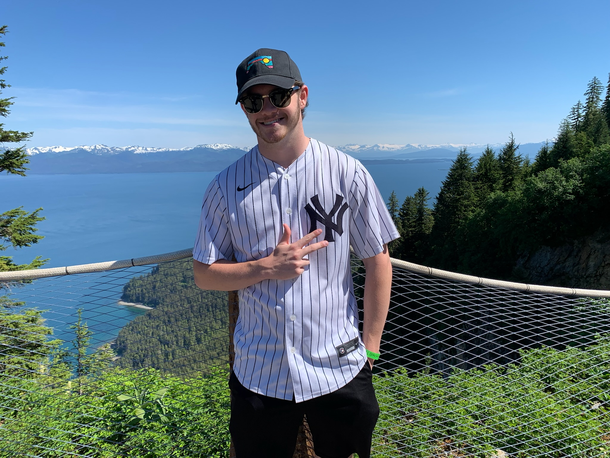

Mychal Kersting
Sports Journalist

mjkersting4@gmail.com
https://twitter.com/mychalwithaY
https://www.linkedin.com/in/mychal-kersting-a98a76232/
https://github.com/MychalKersting
Experience
Big Ten Plus Student U
Commentary and Production
Fall 2021-present
Big Ten Network’s exclusive streaming service, events are produced by students
Positions include: play-by-play and color commentary on volleyball, softball, baseball and soccer, EVS replay technician, camera operator, score bug director
WMUC Sports Radio
Student-run radio station affiliated with the University of Maryland
Fall 2020-present
Play-by-play and color commentary of volleyball and softball
Duties include: taking notes, memorizing player names and positions, arriving at game early
WMUC Sports Writing
Cover men’s soccer team throughout the season
Fall 2021-present
Duties include: attending media availability after practice once a week for quotes, arriving at the match early, developing a story during the match, staying after for postgame quotes, and publishing story on a deadline
Hudson River Blue
Freelance sports blog that covers Major League Soccer franchise New York City FC
Spring 2022-present
Duties include: forming original story ideas, writing and submitting by a deadline
Podcast Creator and Host: The Pitch; Aired on SoundCloud
Directed, produced and broadcasted original soccer and baseball podcast
Fall 2020-Spring 2021
Education
Skills
- On-air play-by-play sports commentary
- On air color sports commentary
- Game camera operation
- EVS replay operation
- Scorebug directing
- Video editing on Premiere Pro
Contact me: